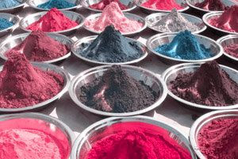

Head to our source for a more in depth explanation into colorblindness.
Colorblindness as the name suggests is when someone does not perceive the world in the same vibrant colorful way as most of the world. This ailment can be more than just a lack of beauty in the world in some circumstances. The internet is an ever expanding world full of colorful websites and images that if not handled properly could be miss-represented to this portion of our communities. Our project aims to help everyone designing things on the internet create in a way that is accessible to as many people as possible, despite the way they see the world.
The most common types of colorblindness is deuteranopia which means the person cannot perceive green light as well as others.

protanopia is the name for people who cannot perceive red light as well as others.

The rarest of the types of colorblindness is tritanopia which as you may be able to guess at this point is the name for people who cannot perceive blue light as well as others.

Monochromacy is when the person perceives no color in their vision and sees the world in shades of grey.